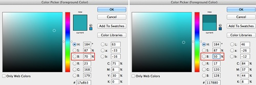
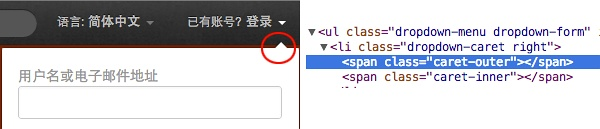
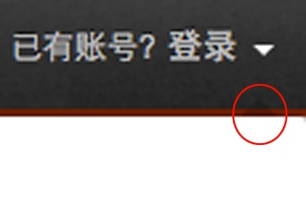

程序员如何做出“不难看”的设计
经常看到程序员展示自己做的东西，有一些是创业项目，有一些是 Weekend Project, 不客气地说，大部分都挺难看的。在 10 年前，只要你做出一个功能齐全的东西，哪怕非常难看也会有很多人叫好，而现在网站和其它互联网产品多如牛毛，没有人再愿意忍受难看的东西了。
我觉得“不难看”是对一个产品最起码的要求，难看的产品往往都很难用。程序员在写代码的时候往往只注重功能的实现和性能的提升，忽视了外观和易用性，其实很多时候只要注意一些基本的规则，就可以大幅度提高产品的观感。作为一个外行，我也算是苦苦自学了好长时间的设计，这里打算分享一些我认为比较实用的技巧，希望可以帮助到同样在摸索的人。
需要声明的是，这里的目标是做出“不难看”的设计，注意，只是“不难看”而已，怎么做得好看我也在学习。另外，我的水平也很低，只是比较能体会外行的痛苦，如果有什么错误的地方，欢迎批评指正。
下面我会从四个方面来入手：对齐，字体排印，配色和装饰元素。
1. 对齐
之所以把“对齐”单独列出来并且放在开头说，是因为它是一个看上去简单但非常容易被忽视的规则。如果你真的把所有该对齐的东西都对齐了，就会发现只是简单遵循这一个规则就会有如此大的效果。
人的眼睛是喜欢秩序的，对齐就会让人觉得愉悦。不过有一点例外：尽量别用居中对齐，除非你有充足的理由。居中对齐会让人觉得很业余，你自己可以试一下好几段文字都居中是什么效果。
当然，也有靠不规则来出彩的设计，但那是高级玩法，我们还是乖乖对齐比较好。关于对齐有一个很好的网站可以观摩，那就是 IA (http://informationarchitects.net/)。它的上一个版本其实更容易看到对齐的效果，可以通过这里查看，顶部和底部的导航看上去没什么联系，如果你对比一下会发现它们对齐得都非常好。
2. 字体排印（Typography）
字体排印，英文名词叫做 Typography, 它包涵的东西很多，不只是字体的选择，还包括行距、行宽以及字体间距等元素的设定，这些东西都左右着我们的阅读体验。我们每天都阅读大量东西，每天都会接触到“文字”，由这一点就可以看出字体排印的重要性。关于字体排印的具体知识我就不多说了，有很多这方面的书和资料，这里只说几点容易被忽视的元素。
首先是行宽的设定，也就是每行显示的文字个数。一般来说，我们的阅读顺序都是从左到右，然后换行。如果每行显示的文字个数太多，那么我们在换行的时候视线移动距离就比较长，就容易感觉到疲劳，所以千万不要搞成只有一栏然后对屏幕自适应宽度，那样的阅读体验非常差。如果非要做流动布局，建议设置一下 max-width 属性。
其次是行距，也就是两行文字之间的距离。经常看到有些人调整了字体大小却忘记了调整行距，结果上下两行几乎挤在了一起，看起来非常累。如果你要调整字体大小，记得把行距也设置一下，就是 CSS 中的 line-height 属性。
第三是字间距。有些时候因为需要，我们会把一些文字设置得非常大，有些文字设置得非常小，这个时候每个字之间的间距可能就会变得过大或者过小，这个时候就需要调整一下，字体设计师们在设计一款字体的时候也会考虑这个因素。在 CSS 里面，有个属性叫 letter-spacing ，可以调整字间距。
最后想说一下的是标点。我们平时用到的很多标点符号都是错误的，比如说，英文的省略号不是三个点：… 而是 … （MacOS X 的快捷键是 Option + ;），英文引号也不是 " 而是 “ （MacOS X 的快捷键是 Option + [），注意，这个和全角引号也不一样。平时写文章聊天无所谓，但如果做设计的话，还是把标点用对比较好。另外，名词拼写最好也严谨一些，App Store 不是 appstore, Xcode 不是 xcode, iPad 不是 ipad…
上面提到的除了标点之外，其余都是关于“空白”的问题。很多程序员可能会关注字体的选择，也知道 Helvetica 和 Arial 的区别，但是对字体之间的“空白”不太在意。而事实上，字体排印更多是对“空白”的设计，把“空白”的部分做好眼睛才能呼吸顺畅。
3. 配色
配色一直以来都是个让我头疼的问题，它看上去很难掌握，事实上也非常难以掌握。有一阵子我甚至怀疑我自己在色彩方面有生理缺陷，不然我他妈那么用功好歹应该有点儿效果啊。后来做了一些色彩识别能力测试，才慢慢打消了破罐子破摔的念头。
关于色彩基础知识的书和资料我看了不少，三原色、互补色、色环和光谱等知识知道了很多，但这些东西对我的帮助微乎其微。并不是这些知识没用，而是它们都需要辅助以大量的练习，可能还需要一个好的老师亲手指导，而我现在已经没时间和精力再从基础开始慢慢学画画了。不过，大量的阅读和无用尝试还是帮助我找到了一些比较实用并有迹可循的东西，下面就说一些窍门。
程序员一般都是用十六进制或者 RGB 来表示色彩，比如说 #FF0000 或者 rgb(100, 210, 241, 0.5) 之类。这种认识色彩的方式非常不好，它们对你来说只是一堆随机数字，只是“碰巧”会出现那种色彩。而且即使你知道 #FF0000 是红色，你也很难通过调整这些数字来找出你想要的色彩。现在我们不要再用十六进制或者 RGB 来考虑色彩了，我们要用 HSB 模式: H(hues)表示色相，S(saturation)表示饱和度，B(brightness)表示亮度。
使用 HSB 来考虑色彩最大的好处是比较直观，当你调整色相(H),饱和度(S) 或亮度(B)中的某一项时，基本可以大概知道色彩会发生什么变化，这样我们就可以选出比较可控的又“不难看”的色彩搭配。比如说，我们可能选择了某一种色彩作为链接的色彩，那么就可以保持该色彩的色相(H), 饱和度(S) 值不变，只调整亮度(B) 的值，这样就顺利得到了一种比较深的色彩，可以用来做 :hover 色彩，如图：

这样用户在鼠标移动到链接上的时候，得到的反馈就比较自然，这里是个简单的 demo:
http://zhuoqun.github.com/demo/link.html
如果把色彩比作杠铃的话，那么程序员的“色彩肌肉”可能只能举起 5 磅的重量，所以开始的时候我们不能太勉强，不要试图去掌控跨度很大的色彩，选中一个色彩之后，任何时候都只调整 H, S, B 中的一项即可。控制住变量，事情就不会变得太糟。
因为我们的力量有限，所以要尽可能少的使用色彩，也就是说要尽量重复使用色彩。比如说，有一种色彩我们用作链接的 :hover 色彩，同时一些高亮的文字的背景色也可以使用它，这样不但减少了色彩种类，还会给人一种视觉上的一致性，有个很好的例子就是 http://www.subtraction.com/ ,这个网站的主人以前是纽约时报的设计总监，网站除了黑白之外这个网站只有一种橘黄色。
相信很多程序员都听说过 Twitter Bootstrap. Twitter Bootstrap 是一个很酷的东西，极大地减少了设计工作，非常适合不懂设计的人快速搭建网站。但现在使用 Twitter Bootstrap 的人越来越多，很多网站看上去千篇一律，让人非常厌烦。其实完全可以根据提到的规则来定制自己的 Twitter Bootstrap, 这里我就以顶部的导航条为例简单做一个 demo. 首先我们看到导航条的背景样式是这样的：
background: #2C2C2C;
background-image: -webkit-linear-gradient(top, #333, #222);
现在我们把 #333 输入到 PhotoShop 里面，可以看到它的 HSB 的值为 0,0,20. 现在我们保持亮度(B) 不变，通过调整 H 和 S 找到一种舒服的颜色，比如 160,90,20. 但是这个颜色亮度太低了，所以我们增加 30 的亮度，颜色就变成了 160,90,50. 十六进制为：#.0D8059.
然后我们对其它颜色做同样的转换。#222 的 HSB 为 0,0,13, 然后把它的 H 和 S 的值设置为和 #333 一样，就变成了 160,90,13, 再增加 30 的亮度，就变成了 160,90,43. 十六进制为：#0B6E4D.
同理， #2C2C2C 会转换成 160,90,47. 十六进制为：#0C7854.

然后把原来样式里面的三个相应的颜色都替换掉就行了。背景换了之后，你会发现菜单选中后的背景颜色还没有改，原来的颜色是 #222, 现在要改成 #0B6E4D. 此外连接上的文字显得有些暗，原来的颜色是 #999, 现在改成 #DDD. 下面是完成后的 demo (只测试了 Chrome 浏览器):
4. 装饰元素
装饰元素都是锦上添花的东西，上面提到的几点如果做不好的话，装饰元素再好看也没用。最常用的装饰元素是纹理和阴影。有时候我们想要给整个网页一个背景，如果是纯色会显得比较呆滞，用纹理平铺会比较好一些，在网上搜 texture 会找到很多相应图片，我比较喜欢纯色然后加一些 noise 的背景，这里有一个生成器可以帮你做到：http://www.noisetexturegenerator.com/
至于阴影，有 text-shadow 和 box-shadow 等。我以前在一些网站浏览的时候，总觉得上面的文字比较特别，选中一看才发现都加了 text-shadow . text-shadow 如果用得好会产生一些很好的文字效果，而且不会影响阅读体验。而如果想要一些立体效果，可以考虑 box-shadow, 但使用的时候要考虑到一致性和假想中的“光源”，相邻的元素最好不要做出相反的阴影。
一般比较专业的网站在细节上都处理得非常好，从装饰元素就可以看出来。因为很喜欢的 Twitter 的设计，有一阵子我就把它的首页自己实现了一遍（可以在这里查看，请用 Chrome 浏览器，因为偷懒没用考虑浏览器差异）。在抄袭的过程中，我发现即使在一些常人不会注意到的细节上它都努力做到尽善尽美。比如说输入框上面的 placeholder 其实是用 span 浮动在上面，因为原生的 placeholder 没那么丰富的效果。还有弹出窗口的那个小三角，乍看之下没什么，但如果你查看代码结构，会发现有两层：

这个让我很好奇：应该一个 div 就可以实现才对啊。当把 caret-inner 隐藏掉之后，发现原来 caret-outer 是一个半透明的层，而且宽高都比 caret-inner 多了 1px，只是用来模拟阴影效果：
抄到这里的时候我感到非常震惊，然后十分肯定这样的代码是设计师自己写的，不然不可能把设计意图实现得那么完美。这才是 real web designer 啊！知名设计师 Zeldman 也曾经在 Twitter 上说过："Real web designers write code. Always have, always will." Twitter 的设计师肯定都是自己写 HTML 和 CSS 代码。
从 Twitter 的例子可以看出，好的装饰元素可以提升品质感。但是也要注意一点，装饰元素只是用来装饰的，千万不要搞得太惹眼以至于喧宾夺主。
以上说的这几点中，修改容易并且见效最快的就是对齐和字体排印，把这两点做好设计会直接上一个台阶。颜色用不好可以先不用，都用灰度也行，比如背景颜色 #EEE , 字体颜色 #333, 分割线颜色 #CCC …… 虽然简陋，但是“不难看”。
下面推荐一些资源，其中有书，也有在线的教程，大部分我都看过而且觉得不错。
1.《写给大家看的设计书》这本书简单易懂，介绍的也都是可以遵循的规则，很适合业余爱好者阅读，非常推荐。
学习写程序虽然有时候也比较痛苦，但总体来说还是比较开心的，因为你能很快看到解决问题的成果。比如说，有时候程序因为少了一个分号而报错，当你通过调试改正了错误，程序立刻就会运行正常，得到你想要的结果。但是学习设计是完全不同的经验，你很难遇到“只要做了XX就会有XX效果”的情况。它的变量太多了，要完全控制这些变量需要丰富的经验和很好的感性，所以请多一些耐心，不要期望短期有大的进步。而这种耐心也是值得的：一旦你在这方面有所进步，它对你的影响就是全方位的，你不止可以做出好东西，也会在其它方面更有品味。
另外，技术和设计都是为了让自己做的东西更好用，它们都是为产品服务的，而不是要凸显自己的功能和地位。如果你通过努力终于掌握了一些设计知识和技巧以后，仅仅为了让别人知道你也懂设计就故意在自己做的东西里加一些完全不必要的“炫耀”，那真是一件值得羞耻的事情。